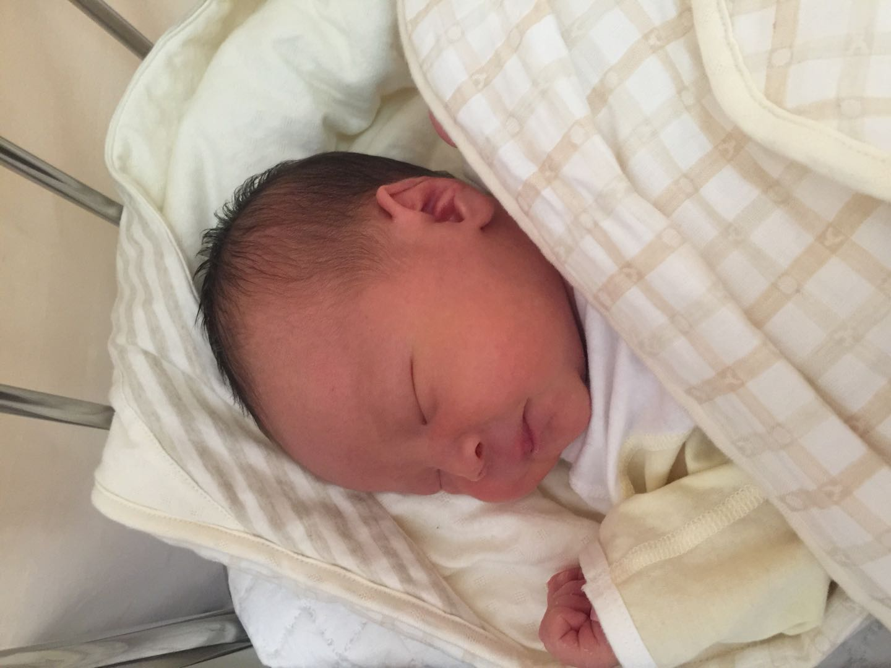

宝宝出生也将近一周岁了，我也在适应着作为父亲的这个角色。老婆也早已经做完月子，开始了正常的上班生活，还跟我调侃说早就忘记了生娃时所受的痛苦了。
这么重要的人生阶段我想很有必要记录一段，以后也能时常回忆。
入院
忐忑，等待宝宝的自然降临
由于预产期过了一周了，老婆肚子一直没有产前的征兆，按照医生的指导，预产期过一周没反应直接就可以住院了，这一周也是我很忐忑的时间，一方面工作上有些要忙，另一方面在焦急的等着宝宝的随时发动。
最终还是等了一周，工作上也阶段性完工。7月13号当天，和老婆，拖着一个大行李箱，还拎着几个大包开开心心的打车去医院，做好了顺产的准备。
住院
住院的一周是对老婆也许是最痛苦的，对我也是如此，焦急的等待。
2018-07-11
满以为当天可以拎包住院的，结果还得挂专家号，做完各种检查后开了住院证明。跑去住院部结果护士说没病房了，难道还得让我们回去等病房空出来不成？结果又回去找了专家，给安排了病房，看来这年头挂专家号花大钱还是有必要的，不然连病房都没有。
下午终于能入住了，B座17号床位。四个床位，病房却很小。床位间距非常的窄，想想这点不算啥，毕竟住不了两天就能回去了。
晚上医生给老婆用了宫颈扩张手段，果然见效，逐渐疼痛感增强，我在一旁只能在病床上安慰她。到凌晨两三点老婆宫缩的感觉比较剧烈，急忙喊了护士，问护士这个怎么办，护士淡定的将老婆推进了产房，顺带了待产的产褥垫、宝宝出生的衣物等等，由于产房外人不能进入，我也只能在外面干等着。
2018-07-12 等待
焦急的等待，与产房里面的老婆也只能通过微信沟通，上午人工破水了，然后还打了催产针，老婆说自己极其疼痛，我唯一能够做的也只有安慰。同时买了便盆，零食，水果之类的委托产房里的阿姨送进去。不停的在产房外面踱步打转。
晚上在病房里租了个躺椅，安慰老婆要坚持，能睡就多睡睡，估计那种疼痛也很难入眠。同一个病房里有两位产妇的宝宝已经出生了，所以晚上时不时会听到宝宝们的啼哭声。
2018-07-13 降生
熬到了13号了，老婆早上发信息给我说已经开了二指，又打了催产针，我心里顿时也安定了些，离宝宝出来更进一步了。结果没过多久，老婆说羊水有些浑浊，有待继续观察，如果三级浑浊就需要剖宫产了。那是的我也是无比的紧张，如果最终还是是做手术那这两天的罪是白受了。
下午老婆发微信来了，说羊水极度浑浊，如果做完胎监不稳定的话就得剖宫产了。作为病人家属，我们也无法左右，只能听医生的，老婆的意思是剖了，想想已经坚持了一天两夜了，如果要剖也没有任何办法。胎监不稳，产房医生出来，拿了手术风险知情书，简单描述了目前老婆所处状况，如果再等宝宝会有风险；但是如果手术可能会有手术的不确定风险，我大概看了下就签了。
下午两点左右，老婆被推出了产房，要推到二楼的手术室，我看着老婆憔悴哭泣的面庞不停的说着我本来想顺产的，都坚持这么久了……看到老婆这样的自责与无奈，我心都快碎了，没事的，咱没事的……被推进了手术室，此时我妈赶到了。
之前老婆让我回家拿吸奶器，宝宝生了要催奶，我想利用手术的这段时间我就回去拿一下吧，于是赶紧打车往家里奔。还没来得及赶回医院，我妈打电话过了，说已经生了，是个男宝，7.8斤此时大概是14:30分。我长舒了一口气，母子平安就好。于是宝宝被推进产房了清理，老婆在手术室继续观察。
过了一个小时左右，老婆被推出了手术室，第一句话是宝宝呢，在手术室呢，你别担心。由于怕混浊的羊水的感染，医院对宝宝打了抗生素，等推到我们病房前的时候，看着那么小的手里插着几根针管，心真疼。
 宝宝睡得如此安然，仔细打量了起来，头相比整个身子显得尤其大，估计长大后头型像你爹呀。咪咪的小妖精，再看旁边病床上的老婆，不对呀，难道又继承了我的优良传统？两个脸颊圆嘟嘟的，鼻子，小嘴，感觉有些你妈妈的样子了，综合来看，以后只能培养你走实力派路线了。
晚上丈母娘，老婆的舅舅、舅妈、弟弟也从老家专程赶来，一下子气氛也热闹了很多，看老婆的精神也恢复的很快，也就安心了。
2018-07-14 ~ 2018-07-16 带娃
剖宫产后需要几天恢复，老婆每天挂着盐水，抗生素啥，镇痛棒等等，宝宝每天也需要推一针抗生素，每天除了吃就是睡。
由于前期没有做足功课，宝宝躺在婴儿床里我尽无所适从。一大堆问题冒上来了，抱姿是啥样的？怎么哄睡？一次多少毫升水兑多少奶？遇到不懂的只能厚着脸皮，问隔壁床上的产妇。同事之前还提醒有必要在医院请个护工照顾宝宝，能够学些经验，看来这个经验也很有必要。经过一两天的摸索，带娃也算是顺手了。
出院
2018-07-17
出院的心情是美好的，从医院拿了各种证件，宝宝医学出生证明，老婆的生育证明，医院的住院小结等等，开开心心的回家了。
坐月子
老婆这一个月非常的辛苦，前期母乳不怎么够，想着如何催乳，也是每天鱼汤，猪蹄汤炖着。每天晚上都不能睡个完整觉了，隔两三个小时就的起来喂一次奶。伴随着腰痛，老寒腿，伤口痛。
宝宝每天苦恼，我们俩也是干着急，感觉永远没吃饱，后来网上查阅才发现可能是腹绞痛。脸上新生儿痤疮比较多，屁股上由于之前用尿不湿被捂出了红屁股。
过一个月去社区医院体检发现宝宝长了一斤都不到，一般都会长两斤，难道这一月之前没有给他吃饱？我们俩满是内疚……
后续
宝宝每个月都在成长，在接触新的东西。 从能够抱着挺直腰背，到能够坐，能够扶着走； 从打哈哈，到咿咿呀呀的叫，到现在能够说出爸爸妈妈；从手指触碰东西，到能够正常抓握。每天都在成长，每天都在变化。